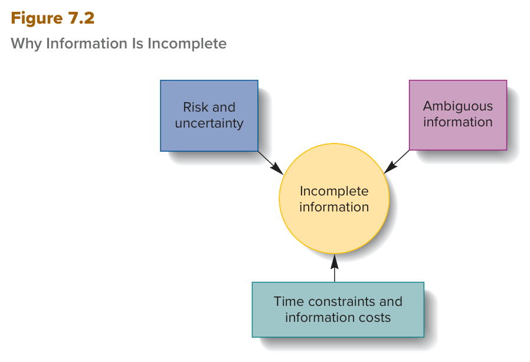
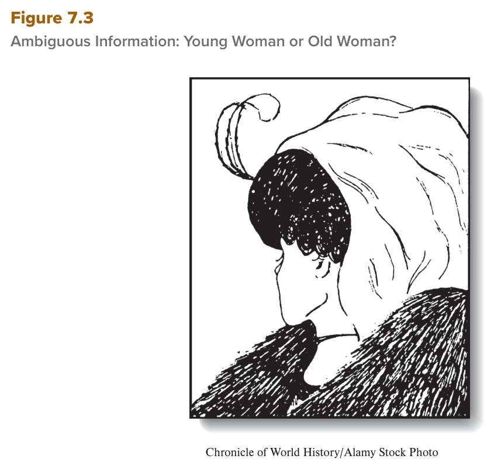

الفصل السابع — طبيعة اتخاذ القرار الإداري
MGT 102 · Chapter 7 · القسم ١ من ٤:
The Nature of Managerial Decision Making
الهدف LO7-1: Understand the nature of managerial decision making, differentiate between programmed and nonprogrammed decisions, and explain why nonprogrammed decision making is a complex, uncertain process.
هذا القسم «وش هو القرار، متى يكون روتيني ومتى يكون صعب، وليش المدير نادراً يطلع بالقرار المثالي»
الفصل السابع يفتح الجزء الثالث من الكتاب (Decision Making, Planning, and Strategy)، وأول قسم فيه يحط الأساس كله
(LO7-1): وش هو decision making (اتخاذ القرار)، والفرق بين القرار المبرمج (programmed)
اللي له قاعدة جاهزة والقرار غير المبرمج (nonprogrammed) اللي ما له قاعدة، وبعدها نموذجين يشرحون كيف
القرار ينتّخذ: النموذج الكلاسيكي (classical model) اللي يقول لك كيف المفروض تقرّر وتطلع بالقرار
الأمثل، والنموذج الإداري (administrative model) حق March وSimon اللي يقول لك
ليش في الواقع المدير يكتفي بقرار مُرضي.
ركّز من الحين على الأعداد لأن الاختبار يبني عليها: ٢ نوعين للقرار، ٢ طريقتين للقرار غير المبرمج (intuition وreasoned judgment)، ٣ افتراضات للكلاسيكي في Figure 7.1، ٣ مفاهيم للإداري، و٣ أسباب لنقص المعلومات في Figure 7.2. وأكثر فخّين يطيّحون الطلاب هنا: risk ضد uncertainty، وoptimum ضد satisficing. والتعاريف الإنجليزية خذها حرفية من صناديق EXAM BOX.
Decision making = العملية اللي يردّ فيها المدير على الفرص والتهديدات (opportunities and threats): يحلّل الخيارات ويحسم أهداف ومسارات عمل محدّدة — يعني يختار حل واحد من مجموعة بدائل. قرار زين ← الأداء يرتفع، قرار سيّئ ← الأداء ينزل.
الفصل يفتح بسؤال: How do managers make decisions that add value? — كيف المدير يتّخذ قرارات تضيف قيمة؟ ومثاله Karen Lynch، الرئيسة التنفيذية لـCVS Health:
- CVS رابع أكبر شركة أمريكية وعندها تقريباً ١٠٬٠٠٠ فرع. Lynch توصف نفسها إنها حاسمة (decisive)؛ خالتها اللي ربّتها بعد وفاة أمها علّمتها إن القرار شي طبيعي وتتقبّل نتيجته. وكلمتها: “When you make decisions as often as I do, you're going to make a bad call. You just have to readjust.”
- ٢٠١٨: CVS (سلسلة صيدليات) اشترت Aetna (شركة تأمين صحي) ضمن استراتيجية تقديم خدمات رعاية صحية. ولما صارت CEO بعدها بثلاث سنين، وسّعت الخدمات من التطعيم والفحوصات والصيدلية لعيادات رعاية أولية وصحة نفسية — والهدف مو بس دخل جديد، تبي الرعاية متاحة أكثر وأرخص (وهذا يفيد ذراع التأمين Aetna).
- ثلاث أنواع فروع: (١) تحويل فروع لـعيادات رعاية أولية فيها أطباء — أسرع نمو، خصوصاً في مناطق فيها ناس كثير مؤهّلين لـMedicare، (٢) HealthHUBs — فحوصات وخدمات وقائية مع بيع منتجات صحية، (٣) صيدليات تقليدية فيها MinuteClinic صغيرة.
- فبراير ٢٠٢١ صارت CEO في عزّ الجائحة ومع بداية توفّر اللقاحات: خلّت CVS مصدر مجتمعي للّقاحات وفحوصات كوفيد، وشعارها “employees first, customers second”. ٩٠٬٠٠٠ موظف من المقر اشتغلوا من البيت، وموظفين الفروع أخذوا معدّات وقاية. وهي وفريقها وقفوا في الفروع كمستقبِلين (greeters) يسمعون الموظفين والعملاء، فاكتشفوا إن الصيادلة مضغوطين، فسوّوا عيادات داخل الفروع بطاقم منفصل للتطعيم.
- للسنة الثانية على التوالي، Lynch رقم ١ في قائمة Fortune لأقوى ٥٠ امرأة (٢٠٢٢).
ليش الكتاب يبدأ فيها؟ لأن قرارات المدراء في كل المستويات تغيّر نمو الشركة ورفاه موظفيها وعملائها وباقي أصحاب المصلحة — بس هالقرارات صعبة لأنها fraught with uncertainty (مليانة عدم يقين). وهذي الفكرة اللي يبني عليها القسم كله.
كل مرة المدير يخطّط أو ينظّم أو يوجّه أو يراقب أنشطة المنظمة، يطلع منه سيل من القرارات (a stream of decisions). مثال الكتاب: لو بتفتح مطعم جديد لازم تقرّر وين موقعه، وش نوع الأكل، ومين توظّف... إلخ. يعني القرار جزء أساسي من كل مهمة يسويها المدير.
ومن الفصول الثلاثة اللي قبل: من أهم شغل المدير إنه يدير البيئة التنظيمية. القوى في البيئة الخارجية تطلّع فرص وتهديدات، وكمان داخل المنظمة تطلع فرص وتهديدات وقت ما تنستخدم الموارد. وعشان يتعامل معها، المدير لازم يقرّر — يعني يختار حل واحد من مجموعة بدائل (select one solution from a set of alternatives).
| المصطلح | التعريف بالإنجليزي (احفظه حرفي) | بالعربي |
|---|---|---|
| Decision making اتخاذ القرار |
The process by which managers respond to opportunities and threats by analyzing options and making determinations about specific organizational goals and courses of action. | العملية اللي يردّ فيها المدير على الفرص والتهديدات عن طريق تحليل الخيارات وحسم أهداف تنظيمية ومسارات عمل محدّدة. |
| رد على فرصة (opportunity) | رد على تهديد (threat) | |
|---|---|---|
| متى؟ | لما المدير يدوّر طرق يحسّن فيها الأداء عشان يستفيد العملاء والموظفين وباقي أصحاب المصلحة | لما أحداث داخل أو خارج المنظمة تضرّ الأداء (adversely affect) والمدير يدوّر كيف يرفعه |
| مثال الكتاب | Lynch انتهزت فرصة تطوير خدمات جديدة تبني على نقاط قوة CVS Health | Lynch ردّت على جائحة كوفيد-١٩: CVS صارت مصدر مجتمعي للّقاحات والفحوصات، ومعها حماية موظفين الصفوف الأمامية |
قاعدة الكتاب: القرار مركزي في كونك مدير — وكل ما المدير اشتغل في planning, organizing, leading, and controlling (مهامّه الأربع الرئيسية) هو يقرّر باستمرار. والمدراء دايماً يدوّرون طرق يقرّرون فيها أحسن، ويحاولون يتجنّبون الأخطاء المكلفة.
| قرارات ممتازة جداً (spectacularly good) | قرارات كارثية (spectacularly bad) |
|---|---|
| قرار Martin Cooper إنه يطوّر أول جوال في Motorola | قرار مدراء NASA وMorton Thiokol بإطلاق مكوك Challenger — قتل ستة روّاد فضاء سنة ١٩٨٦ |
| قرار Apple إنها تطوّر iPod | قرار NASA بإطلاق مكوك Columbia سنة ٢٠٠٣ — قتل سبعة روّاد فضاء |
To deal with these opportunities and threats, managers must make decisions—that is, they must select one solution from a set of alternatives. Decision making is the process by which managers respond to opportunities and threats by analyzing the options and making determinations, or decisions, about specific organizational goals and courses of action. Good decisions result in the selection of appropriate goals and courses of action that increase organizational performance; bad decisions lower performance.
Decision making in response to opportunities occurs when managers search for ways to improve organizational performance to benefit customers, employees, and other stakeholder groups. Decision making in response to threats occurs when events inside or outside the organization adversely affect organizational performance and managers search for ways to increase performance. Decision making is central to being a manager, and whenever managers engage in planning, organizing, leading, and controlling—their four principal tasks—they are constantly making decisions.
- القرار رد على فرص وتهديدات مع بعض — الاختيار اللي يقول «بس على المشاكل والتهديدات» ناقص. وجوهره: اختيار حل واحد من مجموعة بدائل.
- القرار جزء من المهام الأربع كلها (planning, organizing, leading, controlling) — مو مهمة خامسة منفصلة ولا خاص بالتخطيط بس.
- الفرصة = تحسين الأداء لصالح أصحاب المصلحة. التهديد = أحداث تضرّ الأداء. الاثنين ممكن يجون من داخل أو خارج المنظمة.
- الأرقام: Challenger = ١٩٨٦ وستة روّاد (NASA + Morton Thiokol)؛ Columbia = ٢٠٠٣ وسبعة (NASA بس). والقرارات الممتازة: Martin Cooper وأول جوال في Motorola، وApple والـiPod.
- Karen Lynch مثال على الاثنين: فرصة = خدمات جديدة تبني على قوة الشركة، تهديد = الرد على كوفيد. وHealthHUBs بترجع لك تحت كمثال على قرار غير مبرمج.
أي قرار يا مبرمج (programmed): روتيني، شبه أوتوماتيكي، ويمشي على قواعد جاهزة؛ يا غير مبرمج (nonprogrammed): غير روتيني، يجي مع فرصة أو تهديد غير عادي أو جديد، وما له قاعدة — فالمدير يعتمد على الحدس (intuition) أو الحكم المدروس (reasoned judgment).
الكتاب يقول: مهما كان القرار، العملية يا مبرمجة يا غير مبرمجة — ما فيه نوع ثالث.
| المصطلح | التعريف بالإنجليزي (احفظه حرفي) | بالعربي |
|---|---|---|
| Programmed decision making القرار المبرمج |
Routine, virtually automatic decision making that follows established rules or guidelines. | قرار روتيني، شبه أوتوماتيكي، يمشي على قواعد أو إرشادات موجودة من قبل. |
| Nonprogrammed decision making القرار غير المبرمج |
Nonroutine decision making that occurs in response to unusual, unpredictable opportunities and threats. | قرار غير روتيني، يجي ردّاً على فرص وتهديدات غير عادية وما تنتوقّع. |
- القرارات المبرمجة = قرارات تكرّرت مرات كثيرة في الماضي لين المدراء طوّروا قواعد أو إرشادات تنطبق لما مواقف معيّنة تصير حتماً. وهالقواعد اسمها قواعد القرار (decision rules) — إرشادات ثابتة المدير يمشي عليها تلقائياً في القرارات المتكرّرة.
- ليش اسمه «مبرمج»؟ لأن المدير ما يحتاج يسوي حكم جديد كل مرة — يعتمد على قواعد قرار مستقرّة من زمان (long-established decision rules).
| # | أمثلة الكتاب الثلاثة | القاعدة |
|---|---|---|
| ١ | مدير مدرسة يطلب من مجلس المدرسة يوظّف معلّم جديد | كل ما زاد عدد الطلاب المسجّلين ٤٠ طالب |
| ٢ | مشرف تصنيع يوظّف عمّال جدد | كل ما زاد الدوام الإضافي (overtime) للعمّال الحاليين أكثر من ١٠٪ |
| ٣ | مدير مكتب يطلب مستلزمات أساسية (ورق وأقلام) | كل ما نزل المخزون تحت مستوى معيّن — وغالباً يطلب نفس الكمية كل مرة |
قاعدتين مثال الورق (الكتاب يكتبهم كذا):
- Rule 1: When the storage shelves are three-quarters empty, order more copy paper. — لما الرفوف تفضى ثلاث أرباعها، اطلب ورق.
- Rule 2: When ordering paper, order enough to fill the shelves. — لما تطلب، اطلب كمية تعبّي الرفوف.
- القواعد تقدر تنظّم كل الأنشطة الروتينية: مثلاً كيف العامل يسوي مهمة معيّنة، ووش معايير الجودة اللي لازم المواد الخام تحقّقها عشان تنقبل.
- أغلب قرارات التشغيل اليومي (day-to-day running) في المنظمة مبرمجة. أمثلة الكتاب (٤): كم مخزون تحتفظ فيه، متى تدفع الفواتير، متى تفوتر العملاء، ومتى تطلب المواد والمستلزمات.
- شرط وجوده: القرار المبرمج يصير لما المعلومات اللي يحتاجها المدير متوفّرة عشان يبني قواعد. وفيه غموض قليل (little ambiguity) — تعرف بسهولة إن المستودع فاضي، أو تعدّ الطلاب الجدد في الفصل.
- تخيّل المدير مو متأكد إن مسار العمل بيوصله للنتيجة اللي يبيها — أو أسوأ: مو متأكد أصلاً وش يبي يحقّق. واضح إنك ما تقدر تسوي قواعد تتنبّأ بأحداث غير مؤكّدة.
- القرارات غير المبرمجة تنتّخذ ردّاً على فرص وتهديدات غير عادية أو جديدة (unusual or novel)، ولما ما فيه قواعد قرار جاهزة (no ready-made decision rules). والقواعد مو موجودة لأن الموقف غير متوقّع أو غير مؤكّد، والمدير ناقصه المعلومات اللي يحتاجها عشان يبني قاعدة.
- أمثلة الكتاب (٦): الاستثمار في تقنية جديدة · تطوير نوع منتج جديد · إطلاق حملة ترويجية جديدة · دخول سوق جديد · التوسّع دولياً · بدء بزنس جديد — زي اللي سوّته Karen Lynch وCVS Health في HealthHUBs.
- تعليق صورة الكتاب: Nonprogrammed decision making covers areas with no previous benchmarks or rubrics, such as making expert chess moves. — يعني مجالات ما لها معايير أو مقاييس سابقة، زي نقلة شطرنج احترافية.
| Programmed | Nonprogrammed | |
|---|---|---|
| النوع | روتيني، شبه أوتوماتيكي | غير روتيني |
| يجي مع | مواقف تتكرّر كثير | فرص وتهديدات unusual or novel |
| القواعد | فيه decision rules جاهزة | no ready-made decision rules |
| المعلومات | متوفّرة، والغموض قليل | ناقصة؛ الموقف غير متوقّع أو غير مؤكّد |
| كيف تقرّر | تطبّق القاعدة | intuition أو reasoned judgment |
| احتمال الخطأ | أقل | أكبر بكثير (much greater) |
| أمثلة | المخزون، الفواتير، فوترة العملاء، طلب المستلزمات | تقنية جديدة، منتج جديد، سوق جديد، توسّع دولي |
| المصطلح | التعريف بالإنجليزي (احفظه حرفي) | بالعربي |
|---|---|---|
| Intuition الحدس |
Feelings, beliefs, and hunches that come readily to mind, require little effort and information gathering, and result in on-the-spot decisions. | مشاعر وقناعات وإحساس داخلي (hunches) يجي للذهن بسرعة، يحتاج جهد وجمع معلومات قليل، ويطلّع قرار فوري (on-the-spot). |
| Reasoned judgment الحكم المدروس |
A decision that requires time and effort and results from careful information gathering, generation of alternatives, and evaluation of alternatives. | قرار ياخذ وقت وجهد، وينتج من ٣ أشياء: جمع معلومات بعناية + توليد بدائل + تقييم البدائل. |
| Intuition | Reasoned judgment | |
|---|---|---|
| متى؟ | لما لازم تقرّر بسرعة وما عندك وقت تفكّر في الموضوع | لما فيه وقت بس ما فيه قواعد تقودك |
| مثال الكتاب | قادة الإطفاء (fire chiefs, captains, and lieutenants) يعتمدون على expert intuition عشان يحمون أرواح رجال الإطفاء، وينقذون أرواح غيرهم، ويحتوون الحريق، ويحفظون الممتلكات — في طوارئ فيها عدم يقين عالي، مخاطرة عالية، وظروف تتغيّر بسرعة | قرار المضي في اندماج مقترح (proposed merger)، أو كيف توصّل شركة ناشئة (start-up) لمستوى جديد |
| العقلانية | الكتاب: «Exercising» حكمك أكثر عقلانية من إنك «going with» حدسك | |
| يغلط؟ | الاثنين often are flawed وممكن يوصّلون لقرار سيّئ | |
- عشان كذا: احتمال الخطأ أكبر بكثير في القرار غير المبرمج من المبرمج.
- ومن هنا ورايح، لما الفصل يقول decision making يقصد القرار غير المبرمج — لأنه اللي يسبّب أكبر المشاكل للمدراء وصعب بطبيعته (inherently challenging).
- والقرار غير المبرمج ممكن يطلع فعّال أو غير فعّال مهما كانت الظروف، فالمدير لازم ينتبه ما يصير واثق زيادة (overconfident) في قرار جاي من الحدس أو من الحكم المدروس.
Programmed decision making is a routine, virtually automatic process. Programmed decisions are decisions that have been made so many times in the past that managers have developed rules or guidelines to be applied when certain situations inevitably occur. Programmed decision making occurs when managers have the information they need to create rules that will guide decision making.
Nonprogrammed decision making is required for these nonroutine decisions. Nonprogrammed decisions are made in response to unusual or novel opportunities and threats. Nonprogrammed decision making occurs when there are no ready-made decision rules that managers can apply to a situation.
They may rely on their intuition—feelings, beliefs, and hunches that come readily to mind, require little effort and information gathering, and result in on-the-spot decisions. Or they may make reasoned judgments—decisions that require time and effort and result from careful information gathering, generation of alternatives, and evaluation of alternatives. “Exercising” one's judgment is a more rational process than “going with” one's intuition. Thus, the likelihood of error is much greater in nonprogrammed decision making than in programmed decision making.
- Programmed = روتيني + قواعد جاهزة + معلومات متوفّرة + غموض قليل. Nonprogrammed = غير روتيني + unusual or novel + ما فيه قواعد + احتمال خطأ أكبر بكثير. أي سيناريو فيه «كل ما صار كذا، سوّ كذا» = مبرمج.
- أغلب قرارات التشغيل اليومي = مبرمجة. بس باقي الفصل لما يقول decision making يقصد غير المبرمج — لا تخلط.
- Intuition = جهد ومعلومات قليلة + قرار فوري. Reasoned judgment = وقت وجهد + جمع معلومات وتوليد بدائل وتقييمها. لا تعكسهم.
- الاثنين طرق للقرار غير المبرمج (لما ما فيه قواعد) — مو للمبرمج. والاثنين often are flawed: الحدس مو غلط دايماً، والحكم المدروس مو صح دايماً.
- اربط المثال: الإطفاء = expert intuition (ما فيه وقت). الاندماج المقترح = reasoned judgment (فيه وقت بس ما فيه قواعد). والاثنين قرارات غير مبرمجة.
- أرقام الأمثلة: ٤٠ طالب · أكثر من ١٠٪ overtime · الرفوف three-quarters empty.
Classical model نموذج معياري (prescriptive) = يقول لك كيف المفروض تنتّخذ القرارات: تطلّع قائمة كاملة بكل البدائل ونتايجها، ترتّبها حسب تفضيلك، وتختار optimum decision (القرار الأمثل).
الكتاب يقدّم النموذجين (الكلاسيكي والإداري) مع بعض ويقول: يكشفون كثير من الافتراضات والتعقيدات والمزالق (assumptions, complexities, and pitfalls) اللي تأثّر على القرار، ويوضّحون العوامل اللي لازم صاحب القرار ينتبه لها عشان يحسّن جودة قراراته. بس انتبه: النموذجين just guides (مجرد أدلّة) تساعد المدير يفهم عملية القرار — في الحياة الحقيقية العملية typically not cut-and-dried (مو محسومة وجاهزة).
| المصطلح | التعريف بالإنجليزي (احفظه حرفي) | بالعربي |
|---|---|---|
| Classical model النموذج الكلاسيكي |
A prescriptive approach to decision making based on the assumption that the decision maker can identify and evaluate all possible alternatives and their consequences and rationally choose the most appropriate course of action. | مدخل معياري (prescriptive) يفترض إن صاحب القرار يقدر يحدّد ويقيّم كل البدائل الممكنة ونتايجها، ويختار بعقلانية أنسب مسار. |
| Optimum decision القرار الأمثل |
The most appropriate decision in light of what managers believe to be the most desirable consequences for the organization. | أنسب قرار على ضوء اللي المدراء يعتقدون إنه أفضل النتايج للمنظمة. |
- Prescriptive = specifies how decisions should be made — يحدّد كيف المفروض القرار ينتّخذ، مو كيف ينتّخذ فعلاً. وهو من أقدم نماذج القرار (one of the earliest models).
- المدراء اللي يستخدمونه يسوون سلسلة افتراضات مبسّطة (simplifying assumptions) عن طبيعة القرار.
- المقدّمة المنطقية (premise): أول ما المدير يدرك إن فيه قرار لازم ينتّخذ، المفروض يقدر يطلّع قائمة كاملة بكل البدائل والنتايج ويختار الأحسن. يعني يفترض إن المدير يوصل لـكل المعلومات اللي يحتاجها للقرار الأمثل.
- ويفترض كمان إن المدير يقدر بسهولة يكتب تفضيلاته لكل بديل ويرتّبها من الأقل تفضيلاً للأكثر عشان يطلع بالقرار الأمثل.
- ملخّص الكتاب آخر الفصل يجمعه في ٣: معلومات كاملة + يعالجها بشكل موضوعي وعقلاني + يطلع بقرار أمثل.
![Figure 7.1 — The classical model of decision making: three steps stacked on the left and joined by downward arrows (list all the alternative courses of action possible and the consequences of the different alternatives; rank each alternative from least preferred to most preferred according to personal preferences; select the alternative that leads to desired future consequences), each with an arrow to its assumption on the right (all information about alternatives is available to managers; managers possess the mental facility to process this information; managers know what future course of action is best for the organization)](../img/mgt102/figure-7-1.png)
هذا هو Figure 7.1 في الكتاب (ص ١٨٩). فيه عمودين: على اليسار ٣ مربعات ملوّنة = الخطوات، من فوق لتحت بأسهم نازلة؛ وكل مربع له سهم لليمين يروح لـالافتراض اللي وراه. كيف تقرأه: كل خطوة مربوطة بافتراض واحد بس: (١) List all the alternative courses of action possible and the consequences… ← Assumes all information about alternatives is available to managers (المعلومات كلها متوفّرة)؛ (٢) Rank each alternative from least preferred to most preferred according to personal preferences ← Assumes managers possess the mental facility to process this information (عقله يقدر يعالجها)؛ (٣) Select the alternative that leads to desired future consequences ← Assumes managers know what future course of action is best for the organization (يعرف وش الأفضل للمستقبل). وش يجي منه بالاختبار: «كم افتراض؟» = ٣؛ «أي افتراض مربوط بخطوة الترتيب Rank؟» = mental facility؛ و«النموذج prescriptive ولا يوصف الواقع؟». ولاحظ إن كلمة satisfactory ولا limited sample مو موجودة في الشكل — هذي من الإداري.
Keep in mind, however, that the classical and administrative models are just guides that can help managers understand the decision-making process.
One of the earliest models of decision making, the classical model, is prescriptive, which means it specifies how decisions should be made. The premise of the classical model is that once managers recognize the need to make a decision, they should be able to generate a complete list of all alternatives and consequences and make the best choice. In other words, the classical model assumes managers have access to all the information they need to make the optimum decision, which is the most appropriate decision possible in light of what they believe to be the most desirable consequences for the organization. Furthermore, the classical model assumes managers can easily list their own preferences for each alternative and rank them from least to most preferred to make the optimum decision.
The classical model of decision making assumes that decision makers have complete information; can process that information in an objective, rational manner; and make optimum decisions.
- Classical = prescriptive = كيف القرار المفروض ينتّخذ (should be made) — مو وصف للي يصير في الواقع. والكتاب يسمّي النموذجين just guides.
- الافتراضات ٣ وكل واحد مربوط بخطوة: List ↔ المعلومات كلها متوفّرة · Rank ↔ mental facility · Select ↔ يعرف وش الأفضل مستقبلاً. الفخ إنهم يبدّلون الافتراضات بين الخطوات.
- الترتيب في الشكل from least preferred to most preferred — من الأقل للأكثر، وحسب personal preferences.
- Optimum decision = أنسب قرار على ضوء اللي يعتقدون إنه أفضل النتايج — مو «قرار مضمون النجاح». وهو هدف الكلاسيكي؛ الإداري يقول المدير نادراً يوصله.
- Bounded rationality وsatisficing وincomplete information مو من الكلاسيكي — هذي مفاهيم الإداري. الكلاسيكي بالعكس: معلومات كاملة وعقل يستوعب.
James March وHerbert Simon رفضوا افتراضات الكلاسيكي وطلّعوا administrative model: يشرح ليش القرار دايماً غير مؤكّد وفيه مخاطرة، وليش المدير عادةً يطلع بقرار مُرضي (satisfactory) مو أمثل. ومبني على ٣ مفاهيم: bounded rationality · incomplete information · satisficing.
James March وHerbert Simon ما اتفقوا مع الافتراضات اللي تحت الكلاسيكي، وعندهم اعتراضين:
- المدراء في العالم الحقيقي ما عندهم وصول لكل المعلومات اللي يحتاجونها للقرار.
- وحتى لو المعلومات كلها متوفّرة، كثير من المدراء ما عندهم القدرة الذهنية أو النفسية (mental or psychological ability) يستوعبونها ويقيّمونها صح.
فطوّروا النموذج الإداري عشان يشرح ليش القرار دايماً عملية غير مؤكّدة وفيها مخاطرة بطبيعتها — وليش المدراء نادراً يقدرون يقرّرون بالطريقة اللي يفرضها الكلاسيكي.
| المصطلح | التعريف بالإنجليزي (احفظه حرفي) | بالعربي |
|---|---|---|
| Administrative model النموذج الإداري |
An approach to decision making that explains why decision making is inherently uncertain and risky and why managers usually make satisfactory rather than optimum decisions. | مدخل يشرح ليش القرار بطبيعته غير مؤكّد وفيه مخاطرة، وليش المدراء عادةً يطلعون بقرارات مُرضية مو مثلى (satisfactory rather than optimum). |
مبني على ٣ مفاهيم مهمة (احفظها بالترتيب):
| # | المفهوم | وش يعني باختصار | وين شرحه |
|---|---|---|---|
| ١ | Bounded rationality العقلانية المحدودة |
حدود العقل: ما تقدر تعالج كل المعلومات | تحت ↓ |
| ٢ | Incomplete information المعلومات الناقصة |
حدود المعلومة: المعلومة نفسها ناقصة | المفهوم الخامس + Figure 7.2 |
| ٣ | Satisficing الاكتفاء بالمُرضي |
الحل: تدوّر في عيّنة محدودة وتاخذ اللي يمشي | المفهوم السادس |
| المصطلح | التعريف بالإنجليزي (احفظه حرفي) | بالعربي |
|---|---|---|
| Bounded rationality العقلانية المحدودة |
Cognitive limitations that constrain one's ability to interpret, process, and act on information. | قيود إدراكية (cognitive limitations) تحدّ قدرة الشخص على ٣ أشياء: يفسّر المعلومات، ويعالجها، ويتصرّف على أساسها. |
- March وSimon قالوا إن قدرات الإنسان في القرار محدودة (bounded) بقيوده الإدراكية — يعني حدود قدرته إنه يفسّر ويعالج ويتصرّف (interpret, process, and act on) بناءً على المعلومات.
- وحجّتهم: حدود الذكاء البشري تقيّد قدرة صاحب القرار إنه يوصل لـالقرار الأمثل.
- وهم اللي صاغوا المصطلح (coined the term): bounded rationality يوصف موقف فيه عدد البدائل اللي لازم يحدّدها المدير كبير جداً، وكمية المعلومات ضخمة جداً، لدرجة إنه صعب عليه حتى يقرّب من تقييمها كلها قبل ما يقرّر.
James March and Herbert Simon disagreed with the underlying assumptions of the classical model of decision making. In contrast, they proposed that managers in the real world do not have access to all the information they need to make a decision. Moreover, they pointed out that even if all information were readily available, many managers would lack the mental or psychological ability to absorb and evaluate it correctly. As a result, March and Simon developed the administrative model of decision making to explain why decision making is always an inherently uncertain and risky process—and why managers can rarely make decisions in the manner prescribed by the classical model. The administrative model is based on three important concepts: bounded rationality, incomplete information, and satisficing.
March and Simon pointed out that human decision-making capabilities are bounded by people's cognitive limitations—that is, limitations in their ability to interpret, process, and act on information. They argued that the limitations of human intelligence constrain the ability of decision makers to determine the optimum decision. March and Simon coined the term bounded rationality to describe the situation in which the number of alternatives a manager must identify is so great and the amount of information so vast that it is difficult for the manager to even come close to evaluating it all before making a decision.
- March وSimon = أصحاب administrative model، وهم اللي صاغوا bounded rationality، وعندهم satisficing. الاختيار اللي يربطهم بالكلاسيكي = غلط.
- المفاهيم ٣ بالضبط: bounded rationality · incomplete information · satisficing. أي اختيار فيه optimum decision أو prescriptive كمفهوم للإداري = غلط.
- Bounded rationality = حدود العقل (cognitive limitations). Incomplete information = حدود المعلومة. مصطلحين مختلفين في نفس النموذج — الكتاب يقول حتى لو قدرتك على التقييم ما لها حد، المعلومة برضو ناقصة.
- القدرات اللي يقيّدها: interpret, process, and act on information — ٣ أفعال. والسبب: limitations of human intelligence.
- الإداري يشرح ليش (explains why) — مو يقول كيف المفروض. والنتيجة satisfactory rather than optimum.
حتى لو قدرة المدير على تقييم المعلومات ما لها حد، برضو ما يوصل للقرار الأمثل لأن المعلومات ناقصة: البدائل كلها ما تنعرف، ونتايج البدائل المعروفة مو مؤكّدة. والأسباب ثلاثة (Figure 7.2): المخاطرة وعدم اليقين · المعلومات الغامضة · قيود الوقت وتكاليف المعلومات.
المعلومات ناقصة لسببين أساسيين: المدى الكامل للبدائل ما ينعرف (unknowable) في أغلب المواقف، والنتايج المرتبطة بالبدائل المعروفة غير مؤكّدة. وبكلام ثاني، المعلومات ناقصة بسبب:
| # | السبب | الفكرة | مثال الكتاب |
|---|---|---|---|
| ١ | Risk and uncertainty المخاطرة وعدم اليقين |
تعرف الاحتمالات (مخاطرة) أو ما تعرفها أبداً (عدم يقين) | الأدوية ١٠٪ · Apple Newton ١٩٩٣ |
| ٢ | Ambiguous information المعلومات الغامضة |
المعلومة موجودة بس تنفهم بأكثر من طريقة | Figure 7.3 (شابة ولا عجوز؟) |
| ٣ | Time constraints and information costs قيود الوقت وتكاليف المعلومات |
ما فيه وقت ولا فلوس تدوّر كل البدائل | Ford: شهر و٢٠٬٠٠٠ مورّد |

هذا هو Figure 7.2 في الكتاب (ص ١٩٠). في النص دائرة صفراء مكتوب فيها Incomplete information، وحولها ٣ مربعات كل واحد له سهم داخل للدائرة: فوق يسار (أزرق) Risk and uncertainty، فوق يمين (وردي) Ambiguous information، وتحت (أخضر مزرق) Time constraints and information costs. كيف تقرأه: اتجاه الأسهم للداخل = هذي أسباب تصبّ في النتيجة (المعلومة الناقصة) — مو أنواع منها ولا نتايج لها. وانتبه إن الشكل يكتب information costs مع الوقت، والجملة في المتن تقول time constraints بس — نفس السبب الثالث. وش يجي منه بالاختبار: «كم سبب؟» = ٣؛ و«which is NOT a reason؟» — والجواب يكون شي من نفس النموذج بس مو في الشكل، زي bounded rationality أو satisficing.
زي ما شفنا في الفصل السادس، قوى البيئة التنظيمية تتغيّر باستمرار.
| المصطلح | التعريف بالإنجليزي (احفظه حرفي) | بالعربي |
|---|---|---|
| Risk المخاطرة |
The degree of probability that the possible outcomes of a particular course of action will occur. | درجة احتمال إن النتايج الممكنة لمسار عمل معيّن تصير. يعني المدير يعرف النتايج الممكنة ويقدر يعطيها احتمالات. |
| Uncertainty عدم اليقين |
Unpredictability. | عدم القدرة على التنبّؤ — كلمة وحدة. احتمالات النتايج ما تنحدّد والنتايج المستقبلية مجهولة؛ المدراء working blind (يشتغلون وهم عميان). |
| Risk — مثال التقنية الحيوية (biotechnology) | Uncertainty — مثال Apple Newton | |
|---|---|---|
| القصة | المدراء يعرفون إن الأدوية الجديدة عندها احتمال ١٠٪ تنجح في التجارب السريرية المتقدّمة و٩٠٪ تفشل | سنة ١٩٩٣ Apple Computer طرحت Newton، المساعد الرقمي الشخصي (PDA)، والمدراء ما عندهم أي فكرة وش احتمال نجاح الإطلاق |
| ليش؟ | الاحتمالات جاية من خبرة آلاف الأدوية اللي مرّت بالتجارب | Apple أول وحدة تطرح منتج جديد كلياً، فما فيه بيانات معروفة يحسبون منها الاحتمال |
| النتيجة | يعرفون إن فرصة الدواء ١٠٪ بس — بس على الأقل عندهم معلومة يبنون عليها | الإطلاق الأول كان كارثة بسبب مشاكل تقنية، بس نسخة محسّنة بعدها نجحت أكثر |
وجملة الكتاب المهمة: Uncertainty plagues most managerial decision making — عدم اليقين يلاحق أغلب قرارات الإدارة.
- المشكلة: البلاستيك المرمي في المحيطات. والمفارقة (ironically): أكبر مصادره الدول الفقيرة — تستهلك بلاستيك أقل، بس ما عندها أنظمة كفؤة تجمعه وتدفنه أو تعيد تدويره.
- David Katz شاف فيها فرصة وكان مستعد يخاطر (willing to take a risk): كمية البلاستيك لها قيمة اقتصادية، ويبي بزنس يطلّع فلوس من سحب البلاستيك من المحيط لمصانع التدوير.
- أسّس Plastic Bank: مراكز تجميع يديرها أهل المنطقة + حسابات بنكية أونلاين للجامعين. تجيب قوارير ← رصيدك يزيد إلكترونياً ← تشوفه في جوالك وتدفع فيه (mobile payments). كثير منهم يدّخرون لأول مرة في حياتهم.
- الأرقام: من أول مراكز في هايتي ٢٠١٥: حسّن حياة أكثر من ٤٬٢٠٠ عائلة، واستعاد وأعاد تدوير أكثر من ١.٥ مليار رطل (1.5 billion pounds) بلاستيك. وتوسّع لـ: الفلبين، إندونيسيا، البرازيل، مصر، الكاميرون، تايلند.
- التحدّي الباقي: وش يسوي بالقوارير؟ لقى عمّال بسهولة، بس الطلب على البلاستيك المستعمل أصعب: البلاستيك الجديد (virgin plastic) أرخص من المعاد تدويره، وبعض الدول تمنع المعاد تدويره للأكل والشرب. فتشارك مع شركات عالمية زي S.C. Johnson تبي تثبت التزامها بالاستدامة: تموّل المراكز وتلتزم تستخدم بلاستيك معاد تدويره أكثر في تغليفها.
- الخلاصة: الفكرة العظيمة ممكن تجي من شخص واحد، بس عشان تنجح ممكن تحتاج مجموعة ناس يقدرون يخاطرون ومرتاحين مع عدم اليقين (comfortable with uncertainty).
| المصطلح | التعريف بالإنجليزي (احفظه حرفي) | بالعربي |
|---|---|---|
| Ambiguous information المعلومات الغامضة |
Information that can be interpreted in multiple and often conflicting ways. | معلومة معناها مو واضح، وتنفسّر بطرق متعدّدة وغالباً متضاربة. |
كثير من المعلومات اللي تحت يد المدير غامضة. والكتاب يقول لك: طالع Figure 7.3 — تشوف شابة ولا عجوز؟ بنفس الطريقة، المدراء غالباً يفسّرون نفس المعلومة بشكل مختلف ويقرّرون على أساس تفسيرهم هم.

هذا هو Figure 7.3 في الكتاب (ص ١٩١)، رسمة أبيض وأسود (المصدر Chronicle of World History/Alamy). هي صورة وحدة بس تنشاف بشكلين: شابة لافّة وجهها بعيد عنك وتشوف خدّها وطرف وجهها مع ريشة في شعرها وفرو على كتفها، أو عجوز تشوفها من الجنب بـأنف كبير وذقن نازل — ونفس الخطوط اللي ترسم خدّ الشابة هي اللي ترسم أنف العجوز. كيف تقرأه: الشكل مو مخطّط ولا فيه خطوات؛ هو مثال حي على إن نفس «المعلومة» تحتمل قراءتين متعارضتين — وهذا بالضبط اللي يصير لما مديرين يقرون نفس التقرير ويطلعون بقرارين مختلفين. وش يجي منه بالاختبار: «Figure 7.3 يوضّح أي مفهوم؟» = ambiguous information — مو uncertainty (المعلومة هنا موجودة بس تنفهم بأكثر من شكل)، ومو bounded rationality.
المدراء ما عندهم لا الوقت ولا الفلوس يدوّرون كل الحلول البديلة الممكنة ويقيّمون كل نتايجها المحتملة. مثال الكتاب — Ford Motor Company:
- مدير مشتريات عنده شهر واحد يختار مورّد لـقطعة محرّك صغيرة.
- فيه ٢٠٬٠٠٠ مورّد محتمل لهالقطعة في أمريكا بس.
- بالوقت المتاح، مستحيل يكلّم كل الموردين ويسأل كل واحد عن شروطه (السعر، جداول التسليم...).
- وحتى لو الوقت متوفّر، تكلفة الحصول على المعلومات — ومنها وقت المدير نفسه — بتكون باهظة (prohibitive).
Information is incomplete because the full range of decision-making alternatives is unknowable in most situations, and the consequences associated with known alternatives are uncertain. In other words, information is incomplete because of risk and uncertainty, ambiguity, and time constraints (see Figure 7.2).
Risk is present when managers know the possible outcomes of a particular course of action and can assign probabilities to them. When uncertainty exists, the probabilities of alternative outcomes cannot be determined and future outcomes are unknown. Managers are working blind. Uncertainty plagues most managerial decision making.
A second reason information is incomplete is that much of the information managers have at their disposal is ambiguous information. Its meaning is not clear—it can be interpreted in multiple and often conflicting ways.
The third reason information is incomplete is that managers have neither the time nor the money to search for all possible alternative solutions and evaluate all the potential consequences of those alternatives.
- Risk = تعرف النتايج وتقدر تعطيها احتمالات (الأدوية ١٠٪ / ٩٠٪). Uncertainty = الاحتمالات ما تنحدّد، working blind (Newton ١٩٩٣). كلمة probabilities can be assigned ← risk؛ «أول مرة» أو «ما فيه بيانات» ← uncertainty.
- تعريف uncertainty كلمة وحدة: Unpredictability. لو شفتها في اختيار، هذا هو.
- Ambiguous information = المعلومة موجودة بس تنفهم بطرق متعدّدة ومتضاربة (Figure 7.3). مو نفس uncertainty (ما فيه معلومة عن الاحتمالات أصلاً).
- الأسباب في Figure 7.2 ٣ بس. Bounded rationality وsatisficing مو منها — هذي مفاهيم ثانية في نفس النموذج.
- Ford: شهر واحد · ٢٠٬٠٠٠ مورّد · في أمريكا بس · قطعة محرّك صغيرة. وحتى لو فيه وقت، التكلفة prohibitive.
- Newton: الإطلاق الأول فشل بسبب مشاكل تقنية، والنسخة المحسّنة نجحت أكثر. وPlastic Bank (David Katz) إطار عن المخاطرة والراحة مع عدم اليقين — من هايتي ٢٠١٥.
Satisficing = تدوّر وتختار رد مقبول أو مُرضي (acceptable, or satisfactory) على المشكلة أو الفرصة، بدل ما تحاول تطلع بأفضل قرار — يعني تستكشف عيّنة محدودة من البدائل بس.
March وSimon قالوا: المدراء ما يحاولون يكتشفون كل بديل لما يواجهون ٦ أشياء: (١) عقلانية محدودة، (٢) مستقبل غير مؤكّد، (٣) مخاطر ما تنقاس (unquantifiable risks)، (٤) غموض كبير، (٥) قيود وقت، (٦) تكاليف معلومات عالية. بدال كذا يستخدمون استراتيجية اسمها satisficing = exploring a limited sample of all potential alternatives (استكشاف عيّنة محدودة من كل البدائل المحتملة).
| المصطلح | التعريف بالإنجليزي (احفظه حرفي) | بالعربي |
|---|---|---|
| Satisficing الاكتفاء بالمُرضي |
Searching for and choosing an acceptable, or satisfactory, response to problems and opportunities, rather than trying to make the best decision. | تدوّر وتختار رد مقبول أو مُرضي للمشاكل والفرص، بدل ما تحاول تطلع بأفضل قرار. |
رجوع لمثال Ford: الـsatisficing هنا = يسأل عدد محدود من الموردين عن شروطهم، ويثق إنهم يمثّلون الموردين بشكل عام (representative of suppliers in general)، وبعدين يختار من هالمجموعة. التصرّف هذا معقول من وجهة نظر مدير المشتريات — بس ثمنه: ممكن يفوّت مورّد أفضل (a potentially superior supplier is overlooked).
- March وSimon قالوا: القرار الإداري غالباً more art than science (فن أكثر منه علم).
- في العالم الحقيقي، المدير لازم يعتمد على حدسه وحكمه (intuition and judgment) عشان يطلع باللي يبان له أفضل قرار قدّام عدم اليقين والغموض.
- والقرار الإداري غالباً سريع الإيقاع (fast-paced): المدير يستخدم خبرته وحكمه عشان يقرّر قرارات حاسمة في ظروف معلومات ناقصة.
- ما فيه شي غلط في هالطريقة، بس لازم صاحب القرار يعرف إن الحكم البشري غالباً معيب (often flawed) — وعشان كذا حتى أفضل المدراء أحياناً يطلعون بقرارات سيّئة. وهذا الجسر لدرس ٢: الخطوات الست والتحيّزات الذهنية.
| Classical model | Administrative model | |
|---|---|---|
| مين | من أقدم نماذج القرار | James March وHerbert Simon |
| نوعه | prescriptive — كيف القرار المفروض ينتّخذ | يشرح ليش القرار غير مؤكّد وفيه مخاطرة |
| المعلومات | كاملة: قائمة بكل البدائل والنتايج | ناقصة (incomplete information) |
| العقل | يقدر يعالجها بشكل موضوعي وعقلاني (mental facility) | محدود (bounded rationality) |
| البحث | كل البدائل | عيّنة محدودة (limited sample) |
| القرار | optimum (الأمثل) | satisfactory (المُرضي) — satisficing |
| ملخّص الكتاب | complete information + objective, rational + optimum decisions | bounded rationality + نادراً عندهم كل المعلومات + satisfice ويعتمدون على الحدس والحكم |
March and Simon argued that managers do not try to discover every alternative when faced with bounded rationality, an uncertain future, unquantifiable risks, considerable ambiguity, time constraints, and high information costs. Rather, they use a strategy known as satisficing, which is exploring a limited sample of all potential alternatives. When managers satisfice, they search for and choose acceptable, or satisfactory, ways to respond to problems and opportunities rather than trying to make the optimum decision.
March and Simon pointed out that managerial decision making is often more art than science. Although there is nothing wrong with this approach, decision makers should be aware that human judgment is often flawed. As a result, even the best managers sometimes make poor decisions.
March and Simon argued that managers exhibit bounded rationality, rarely have access to all the information they need to make optimum decisions, and consequently satisfice and rely on their intuition and judgment when making decisions.
- Satisficing = acceptable, or satisfactory — مو best ولا optimum. ويدوّر في limited sample — مو في كل البدائل.
- لا تخلط: satisficing = الاستراتيجية (كيف تدوّر وتختار). bounded rationality = القيد العقلي اللي يدفعك لها. الاثنين من الإداري بس مو نفس الشي.
- ثمنه في مثال Ford: ممكن يفوّت superior supplier — ومع كذا الكتاب يقول التصرّف reasonable.
- more art than science — فن أكثر من علم، مو العكس. والكتاب يقول nothing wrong with this approach بس human judgment is often flawed ← even the best managers sometimes make poor decisions.
- أي سيناريو فيه «شاف كم خيار واختار أول واحد يمشي» = satisficing. وأي سيناريو فيه «قارن كل البدائل واختار الأفضل» = classical / optimum.
اختبر نفسك
الأسئلة بالإنجليزي لأن الاختبار بالإنجليزي. جاوب قبل ما تفتح الحل. لو غلطت في ٢ ارجع لجدول «المخاطرة ضد عدم اليقين» في المفهوم الخامس، ولو غلطت في ٣ أو ٤ ارجع للشكلين 7.1 و7.2.
- nonprogrammed decision making
- intuition
- programmed decision making
- satisficing
الجواب
C. فيه قاعدة جاهزة (تحت ٢٠ كيس ← اطلب ٥٠) تتكرّر بنفس الكمية كل مرة — نفس مثال الكتاب: مدير المكتب يطلب الورق لما المخزون ينزل تحت مستوى معيّن و«غالباً يطلب نفس الكمية كل مرة». هذا programmed: روتيني، شبه أوتوماتيكي، يمشي على decision rules. الفخ في A: nonprogrammed للمواقف الجديدة أو غير العادية اللي ما لها قاعدة. وB فخ: intuition طريقة تقرّر فيها لما ما فيه قاعدة — وهنا فيه قاعدة. وD: satisficing = تختار بديل مُرضي من عيّنة بدائل، وهنا ما فيه بحث بين بدائل أصلاً.
- uncertainty
- risk
- ambiguous information
- programmed decision making
الجواب
A. أول شركة تطرح منتج جديد كلياً وما فيه بيانات تحسب منها الاحتمال = بالضبط مثال Apple Newton (١٩٩٣): uncertainty — the probabilities of alternative outcomes cannot be determined، والمدراء working blind. الفخ في B: risk لما تقدر تعطي النتايج احتمالات (زي الأدوية ١٠٪ نجاح من خبرة آلاف الأدوية). وC: ambiguous information = معلومة موجودة بس تنفهم بأكثر من طريقة (Figure 7.3)، وهنا المعلومة أصلاً مو موجودة. وD: programmed = روتيني بقواعد — عكس الموقف تماماً.
- All information about alternatives is available to managers.
- Managers know what future course of action is best for the organization.
- Managers will choose a satisfactory rather than an optimum alternative.
- Managers possess the mental facility to process this information.
الجواب
D. في Figure 7.1 كل خطوة على اليسار لها سهم لافتراض على اليمين، والخطوة الثانية (Rank…) سهمها يروح لـ Assumes managers possess the mental facility to process this information. الفخ في A: هذا افتراض الخطوة الأولى (List all…). وB افتراض الخطوة الثالثة (Select…). وC مو من الشكل أصلاً: الاختيار «المُرضي» من administrative model (satisficing)، والكلاسيكي يدوّر على optimum.
- Risk and uncertainty
- Bounded rationality
- Ambiguous information
- Time constraints and information costs
الجواب
B. Figure 7.2 فيه ثلاث مربعات بس أسهمها تصبّ في دائرة Incomplete information: A وC وD. Bounded rationality فخ لأنه من نفس النموذج الإداري — بس هو مفهوم مستقل عن حدود العقل، مو سبب لنقص المعلومة. والكتاب يقول: حتى لو قدرة المدير على التقييم ما لها حد، المعلومة برضو ناقصة. والسؤال بـNOT، فدوّر على اللي مو في الشكل.
- making the optimum decision
- satisficing
- following the classical model
- making a programmed decision
الجواب
B. شاف عيّنة صغيرة (١٥ من ٩٠٠) واختار أول واحد «يمشي» = satisficing: exploring a limited sample of all potential alternatives واختيار رد acceptable, or satisfactory. الفخ في A وC: optimum decision وclassical model يبون كل البدائل ونتايجها عشان يطلعون بالأفضل — وهو ما شاف إلا ١٥. وD: programmed = قاعدة جاهزة لموقف متكرّر، وهنا ما فيه قاعدة؛ هو يبحث ويختار. والثمن زي مثال Ford: ممكن فاته مرشّح أفضل.
المصطلحات
| English | بالعربي | الفخ |
|---|---|---|
| Decision making | اتخاذ القرار | رد على فرص وتهديدات مع بعض؛ اختيار حل واحد من بدائل؛ جزء من المهام الأربع كلها |
| Opportunities and threats | الفرص والتهديدات | فرصة = تحسين الأداء؛ تهديد = أحداث تضرّ الأداء؛ من داخل أو خارج المنظمة |
| Programmed decision making | القرار المبرمج | روتيني + قواعد جاهزة + معلومات متوفّرة؛ أغلب قرارات التشغيل اليومي |
| Decision rules | قواعد القرار | إرشادات ثابتة تنطبق تلقائياً في القرار المبرمج؛ مثال Rule 1 / Rule 2 للورق |
| Nonprogrammed decision making | القرار غير المبرمج | unusual or novel + ما فيه قواعد؛ احتمال الخطأ أكبر بكثير؛ هو المقصود في باقي الفصل |
| Intuition | الحدس | جهد ومعلومات قليلة + قرار on-the-spot؛ مو غلط دايماً بس often flawed |
| Expert intuition | الحدس الخبير | قادة الإطفاء في الطوارئ: عدم يقين عالي + مخاطرة عالية + ظروف تتغيّر بسرعة |
| Reasoned judgment | الحكم المدروس | وقت وجهد + جمع معلومات + توليد بدائل + تقييمها؛ أكثر عقلانية بس برضو يغلط |
| Classical model | النموذج الكلاسيكي | prescriptive؛ معلومات كاملة؛ ٣ افتراضات في Figure 7.1 |
| Prescriptive | معياري (يقول كيف المفروض) | specifies how decisions should be made — مو وصف للواقع |
| Optimum decision | القرار الأمثل | أنسب قرار على ضوء اللي يعتقدون إنه أفضل النتايج؛ هدف الكلاسيكي |
| Administrative model | النموذج الإداري | March & Simon؛ يشرح ليش؛ satisfactory rather than optimum؛ ٣ مفاهيم |
| Bounded rationality | العقلانية المحدودة | حدود العقل: interpret, process, and act on؛ March & Simon صاغوا المصطلح |
| Cognitive limitations | القيود الإدراكية | أساس bounded rationality؛ تحدّ القدرة على الوصول للقرار الأمثل |
| Incomplete information | المعلومات الناقصة | حدود المعلومة مو العقل؛ ٣ أسباب في Figure 7.2 |
| Risk | المخاطرة | تعرف النتايج وتعطيها احتمالات؛ الأدوية ١٠٪ نجاح / ٩٠٪ فشل |
| Uncertainty | عدم اليقين | Unpredictability؛ الاحتمالات ما تنحدّد؛ working blind؛ Apple Newton ١٩٩٣ |
| Ambiguous information | المعلومات الغامضة | تنفسّر بطرق متعدّدة ومتضاربة؛ Figure 7.3 (شابة ولا عجوز) |
| Time constraints and information costs | قيود الوقت وتكاليف المعلومات | السبب الثالث؛ Ford: شهر واحد و٢٠٬٠٠٠ مورّد؛ التكلفة prohibitive |
| Satisficing | الاكتفاء بالمُرضي | limited sample + رد acceptable, or satisfactory؛ ممكن يفوّت بديل أفضل |
| Figure 7.1 — The Classical Model of Decision Making | الشكل ٧.١ — النموذج الكلاسيكي لاتخاذ القرار | ٣ خطوات ↔ ٣ افتراضات؛ Rank ↔ mental facility |
| Figure 7.2 — Why Information Is Incomplete | الشكل ٧.٢ — ليش المعلومات ناقصة | ٣ أسباب بس؛ bounded rationality مو منها |
| Figure 7.3 — Ambiguous Information: Young Woman or Old Woman? | الشكل ٧.٣ — معلومة غامضة: شابة ولا عجوز؟ | مثال على ambiguous information — مو uncertainty |
مبني من نص الكتاب Contemporary Management (Jones & George، McGraw Hill، الطبعة ١٢) —
Chapter 7: Decision Making, Learning, Creativity, and Entrepreneurship، القسم الأول: Overview و
The Nature of Managerial Decision Making (فروعه: Programmed and Nonprogrammed Decision Making · The Classical Model ·
The Administrative Model)، الهدف LO7-1 (صفحات ١٨٤–١٩٢)، مع ملخّص الكتاب Summary and Review
وFigure 7.1 وFigure 7.2 وFigure 7.3.
ملخّص بس: إطار فاتحة الفصل A MANAGER'S CHALLENGE (Karen Lynch's Bold Decisions at CVS Health) مأخوذ منه
الأرقام والقرارات الأساسية، وإطار ETHICS IN ACTION (Taking Risks to Help Others and the Planet) مأخوذ بفكرته وأرقامه،
وتعليق صورة الشطرنج مذكور بسطر. خطوات القرار الست والتحيّزات الذهنية (LO7-2) في درس ٢، والقرار الجماعي (LO7-3)
في درس ٣، والتعلّم التنظيمي والإبداع وريادة الأعمال (LO7-4 وLO7-5) في درس ٤.